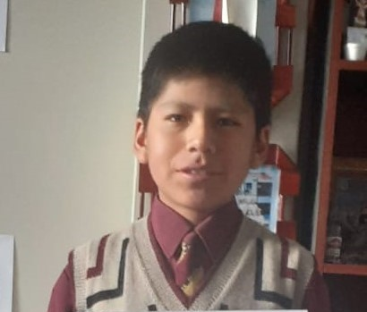

PRESENTACIÓN:
Soy Sebastiam Ttacca Quenaya, Nací el 22 de Junio del 2007 en la ciudad de Puno,Puno donde actualmente vivo, Soy el segundo hijo. Mi padre el Sr. Fredy Ttacca Choque, es un Ingeniero Civil. Mi madre, la Sra. Lucy Luzmila Quenaya Huallpara, Estudio en el Colegio CRAMER de la ciudad de Puno. Actualmente tengo 16 años, y curso el 4to grado de Secundaria, en los estudios no soy alumno excelencia pero tampoco soy malo, las materias que mas me gustan son: Geografia, Historia, Biologia, Aritmetica y Educacion Fisica. Trato de esmerarme mucho mas cada vez en las areas que mas errores tengo.
¿QUIEN SOY?
Me considero una persona apto de realizar diferentes actividades como puede ser; el estudiar, leer, hacer deporte, puedo cocinar incluso puedo manejar auto. En cuanto mi temperamento puedo controlar, si alguien me ofende no reacciono, me gusta ayudar a las personas que me rodean, pero no me gusta que abusen de ello. Quiero estudiar ingeneria de Minas, y creo que si podre ingresar a la universidad que mejor me covenga para poder ejercer mi carrera, porque me considero una persona perseverante
MIS HOBBIES Y PASATIEMPOS
VIDEOJUEGOS:

Me gustan los Videjuegos porque son muy entretenidos, puedes hacer de todo y me divierte mucho, algunos de los videojuegos que mas juego son: Dota 2, Valorant, Left4Dead 2, Counter Strike GO, etc.
DEPORTES:

Me gusta hacer deporte y me gusta hacer cosas fisicas, algunos deportes que practico con frecuencia y en los que me considero que soy bueno son: Futbol, Ciclismo, Voleyball, Basquetball.
MUSICA:

Hace poco descubri que escuchar musica me ayuda para concentrarme en hacer mis actividades, siento que las hago con mas rapidez tambien me ayuda a concentrame para hacer alguno de mis trabajos. Los generos de musica que me gustan son: Rock, el Metal, Pop, Musica Electronica, etc.
TOCAR INSTRUMENTOS:

Mi mejor pasatiempo es el de tocar instrumentos hace que pueda mejorar mi capacidad auditiva y tenga sensaciones satisfactorias al tocar la guitarra.
VIAJAR:

Me gusta mucho el viajar, salir de lo común y conocer lugares diferentes, pero en particular disfruto mas el viaje y lo bonito que es ver el paisaje cambiante que me rodea.